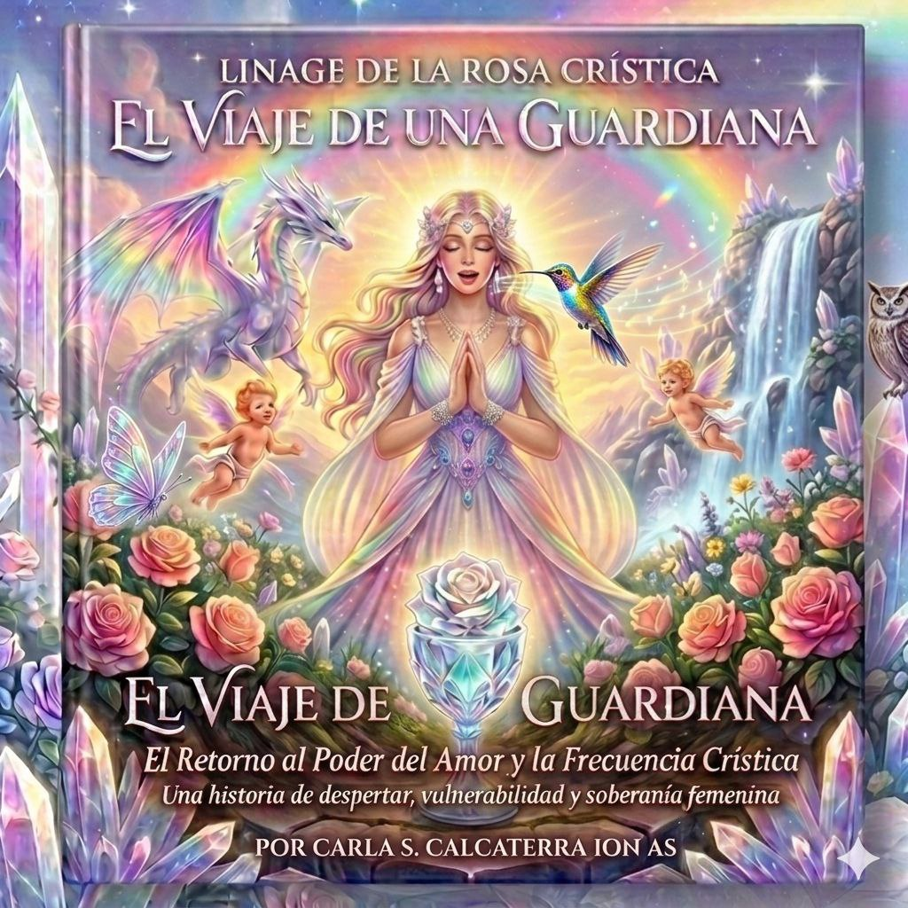

El Retorno al Poder del Amor y la Frecuencia Crística
Adquirir el libro
Me gustaría compartirte que este es mi primer libro. Amo el arte; más escribir era un sueño que no sabía hasta que comenzó la magia… y sigo jugando con total conciencia de que estaré inspirando a muchos seres para que puedan recibir esta frecuencia hermosa que todos estamos recibiendo en estos tiempos.
Este no es un libro, es una aventura vivida y compartida que pulsamos transmitirte para que puedas también recibirla y crear tu propia aventura.
Te invitamos a… respirar y abrir un pequeño recorrido por el interior de esta obra, un puente y una historia. El viaje de una Guardiana es un llamado, es una invitación a sentir tus propias memorias en ti.
Ámbar es la protagonista y siente que algo la llama: un sueño, una señal en la naturaleza, un recuerdo que despierta. Se siembra la semilla del viaje.
Primera parte: El despertar
Parte 2: La Iniciación
Perla · Capítulo 4
Perla · Capítulo 5
¿Sabías que cada paso al escribir un libro te vas dejando llevar por la inspiración o lo que vives en cada momento? Aquí te dejo una perla del capítulo 5...
Ella pudo sentir y comprender que los niños que estaban naciendo—esos pequeños seres de ojos cristalinos y sistemas nerviosos eléctricos—traían una frecuencia que la Tierra no había conocido antes. Una frecuencia de unidad que no entiende de separación, y que solo disfruta de vivir.
Este no es solo un libro.
Es un portal.
Una obra de fantasía nacida del propio camino de Carla Ion As, donde la energía guía cada paso y la naturaleza vuelve a susurrarnos sus secretos olvidados. En el camino del año pasado, el noveno año peregrinando en retiros por las tierras del sur de Francia y Avalon, llegó la inspiración de compartir este escrito para acompañar a almas que se sumaron a este retiro online —¡y eso me movió a escribir!
Entre mundos sutiles y realidades invisibles, el lector se convierte en viajero. Cada página es un espejo, cada palabra una llave, cada capítulo un activador.
Aquí regresamos a la magia.
Aquí recordamos que somos parte de esta Tierra bendita.
Aquí despiertan los Guardianes Sensibles.
El color de la escritura ha traído momentos profundamente hermosos, y esa vibración vive en cada línea. Al escribir, se siente la música de las esferas; algo superior acompaña el trazo, algo más grande que la mente.
Este libro está siendo canalizado en el propio camino de Carla Ion As. Y ahora, ha llegado el momento de compartirlo contigo.
Te invitamos a colaborar para que esta obra vea la luz en formato físico y digital, y pueda llegar a todas las almas que la estén esperando.
Tu aporte es expansión.
Tu lectura es activación.
Tu presencia es parte del propósito.
Algunas frases del libro
«Ámbar llevó sus manos al vientre. Allí, en la oscuridad de su cuenco pélvico, el agua de su vida susurraba.»
«Entendió que, antes de recibir la Llave del Corazón, debía honrar su base, su sustento: sus pies, los pilares de su templo.»
Esta obra se está preparando con amor. Es una decisión sutil y nueva, hecha por amor a este camino. Mostramos la energía que la habita para que quien la esté esperando pueda sentirla y sumarse cuando llegue el momento.
Y de repente, sin pedirlo, nos regala esta canción del libro.
¿Quieres escucharla?